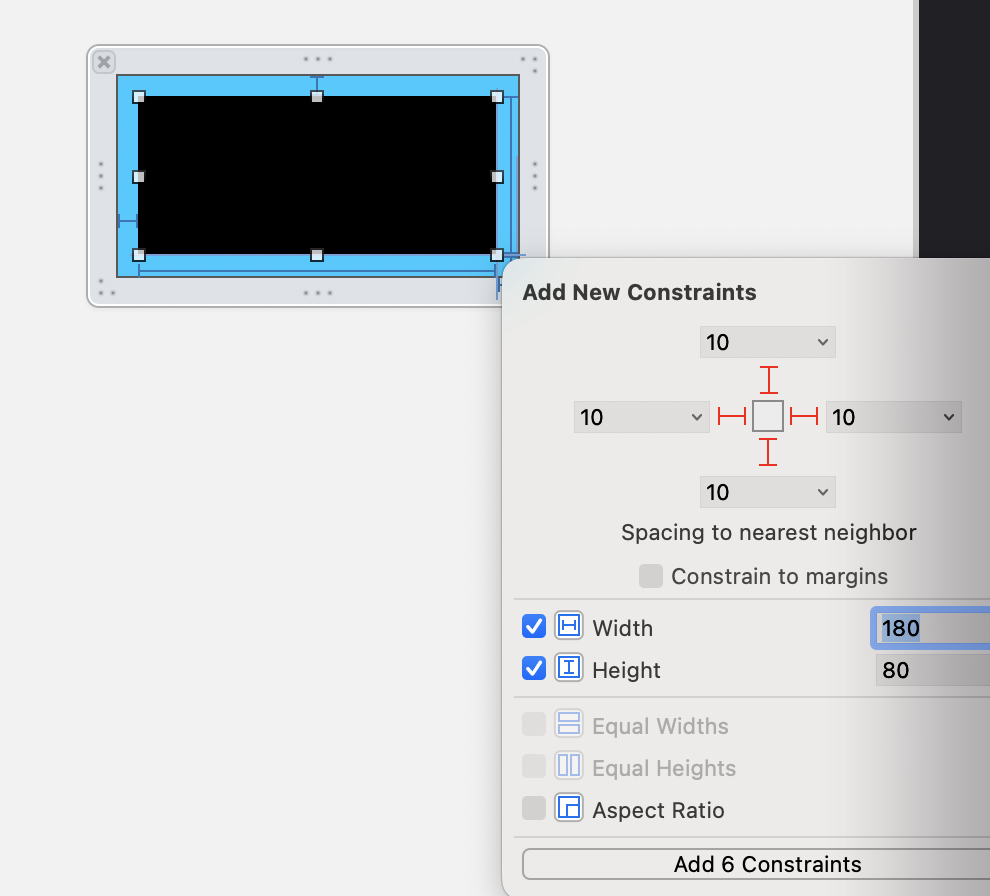

最佳实践：iOS开发在xib/storyboard中自定义view
在xib或者storyboard嵌套另一个用xib布局的view是一个经常用到的技术点，要完全掌握好这个知识点不是那么容易，用常规的xib创建view的方法通常并不能满足我们的需求。
当我们使用Autolayout自动布局时，在xib中嵌套一个自定义的view可能就更麻烦了。通过这篇文章你将学习到嵌套xib布局的方法和怎么在xib中使用autolayout的一些高级用法来使view向label一样具有contrisic content size。
从xib加载自定义view视图
新建项目:
添加view和xib到项目中：
设置xib的大小为freedom，并设置xib的大小为 200x100

设置xib的 Fils’s Owner 为CustomView，不要设置view的class
xib文件中添加view并设置约束

设置约束后的xib是这样：
.xib和.m建立链接
重写initWithCoder:方法把xib中的view添加进来
1 | - (instancetype)initWithCoder:(NSCoder *)coder |
在Main.storyboard中添加CustomView，并设置约束
这时候会报错，因为view的约束不足。
让UIView像UILabel一样拥有IntrinsicContentSize
在UIKit中有一些视图具有intrinsicContentSize，比如UILabel、UIButotn、UIImageView等。这类视图可以根据自身的内容确定大小，在设置约束时只需要确定位置（x/y）就可以了。
但是UIView本身是不具备这个特性的，不过我们可以通过在xib或者storyboard中设置intrinsicSize来告诉编译器当前的视图是可以确定自身大小的。
这样设置以后约束不足的警告就没有了。
最终，view controller中customView的展示就是.xib中的样子了。
总结
通过这篇文章我们可以学到：
- xib自定义view的方法
- 让UIView像UILabel一样拥有IntrinsicContentSize的方法
- xib嵌套使用的方法
想了解更多内容关注公众号【iOS开发栈】。
相关文章